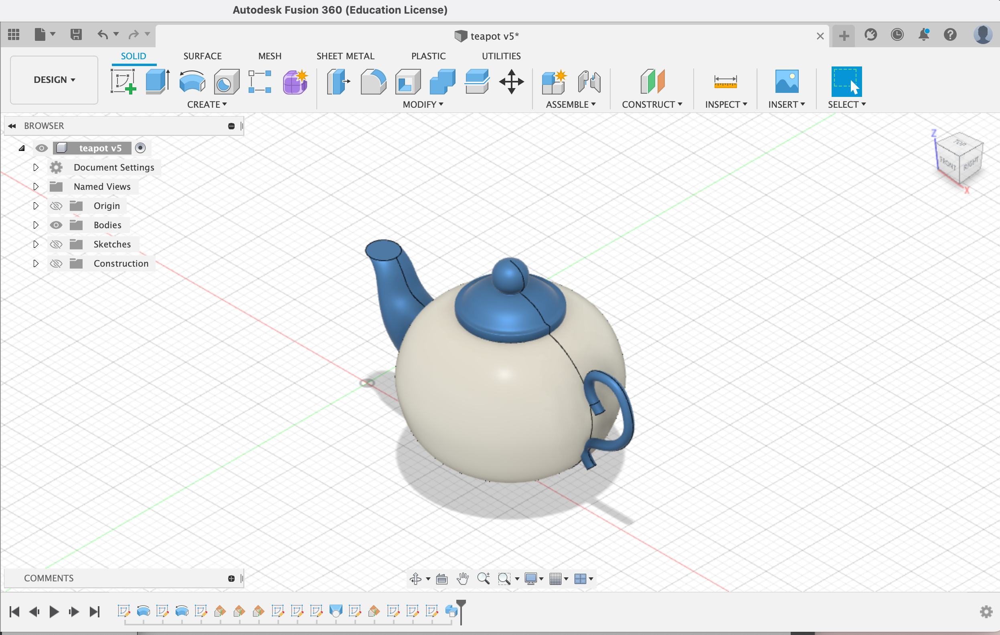
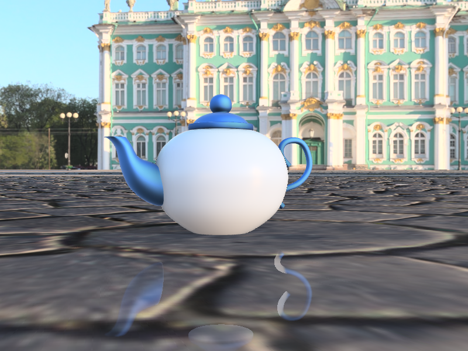
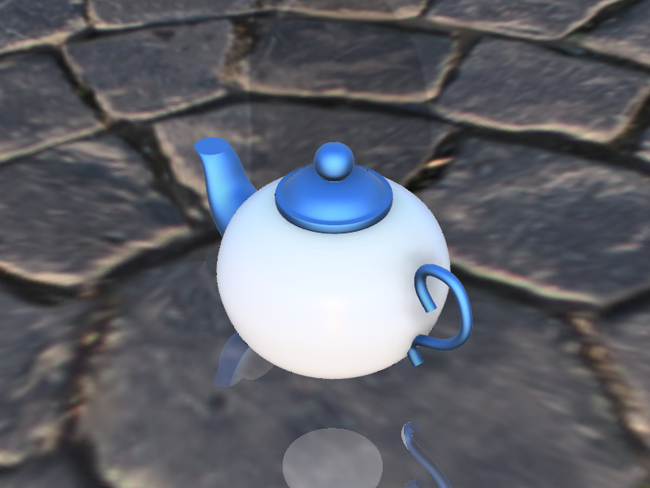
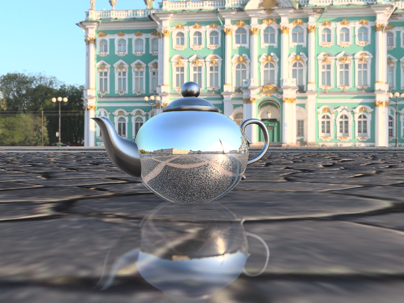
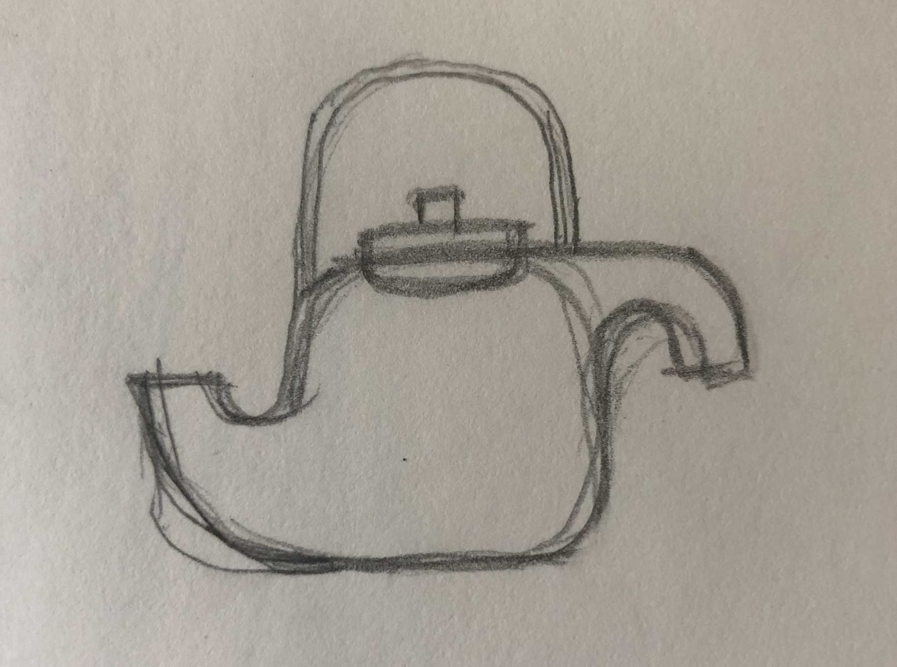
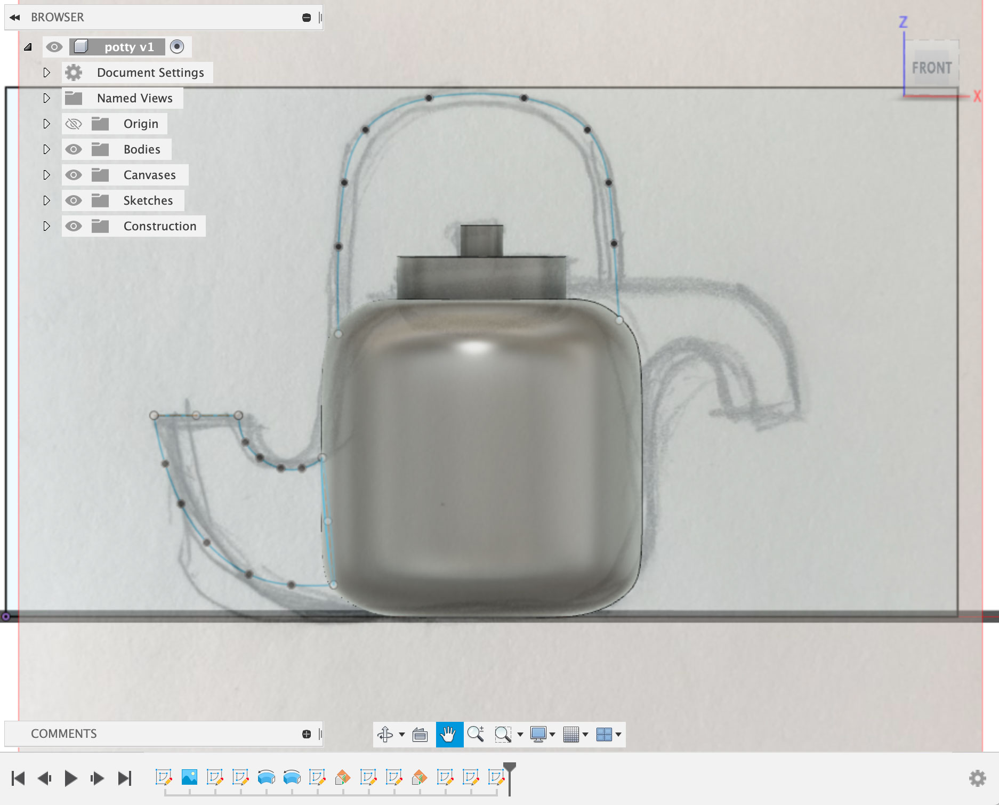

SJSU | DMA | Spring 2022
Professor Steve Durie
Course link
This teapot is made following a tutorial with an image as reference. Appearance of the model is customized on Fusion. Link to 3D view shared below.
   This is a hand-drawn design of a teapot with 2 spouts that I made.
 Here are finished design of my teapot with 2 difference customed colors and textures.
While making the spouts for this teapot, I had a hard time aligning the points together, therefore I could not use the tool "Loft" as I wanted. I had to rewatch Steve's tutorials again and figured out that I had to make construction lines, construct planes, and then project the points onto the planes that I just made in order to mark it down on the surface, so that when I try to connect the points from 2 different surfaces, it will click in easily.